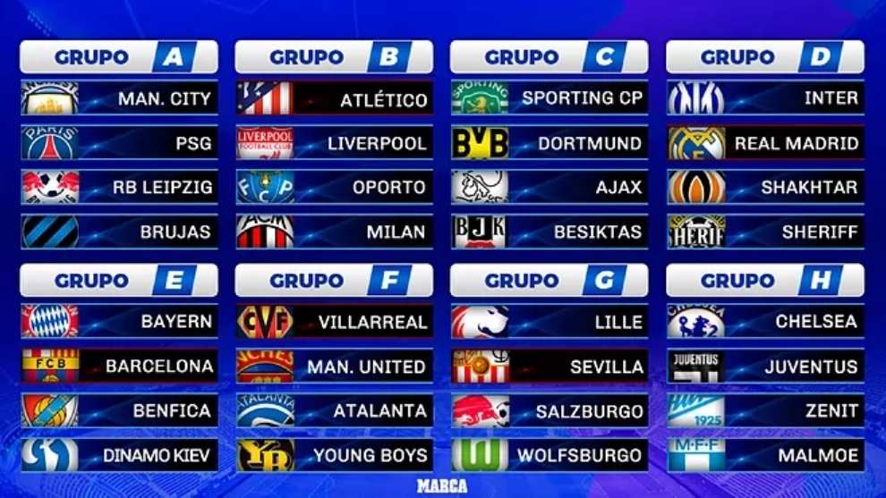

El sorteo de fase de grupos de la temporada 2021-2022 se hizo el dia 26 de agosto de 2021 en Estambul a las 18:00.
El sorteo de octavos de final de la temporada 2021-2022 se realizo el dia 13 de diciembre de 2021 en Nyon a las 15:00
El sorteo de octavos de final y de semifinales de la temporada 2021-2022 se a hecho hoy, el día 18 de marzo en Nyon a las 12:00.